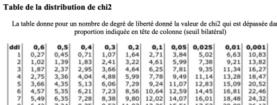

Le test d'indépendance du khi-deux
contenu
menu
navigation
outils
Comment trouver la valeur de khi-deux critique ?
Trouver la valeur de khi-deux critique ?

Information : dl=2 au seuil de 1%
Correction
Recommencer
Précédent
Suivant
Enoncé
Enoncé
Formulation des hypothèses
Calcul des effectifs théoriques selon l'hypothèse nulle
Exercice : Petite question
Calcul du khi-deux
Jamovi : valeur du khi-deux
Règle de décision
Exercice : Comment trouver la valeur de khi-deux critique ?
Conclusion
Accueil
Module